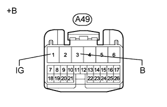

DTC C1782/82 Низкое положительное напряжение аккумуляторной батареи |
| Код DTC | Условие обнаружения DTC | Неисправный участок |
| C1782/82 | Напряжение на контакте IG или B в течение 0,5 с составляет не более 10 В или не менее 16 В. |
|
| 1.СНИМИТЕ ПОКАЗАНИЯ ПОРТАТИВНОГО ДИАГНОСТИЧЕСКОГО ПРИБОРА (ДЛЯ НАПРЯЖЕНИЙ ПИТАНИЯ IG И +B) |
Выключите зажигание.
Подсоедините портативный диагностический прибор к DLC3.
Включите зажигание (IG).
Включите портативный диагностический прибор.
Войдите в следующие меню: Chassis / Air suspension / Data List.
| Информация на дисплее прибора | Измеряемая величина / диапазон измерения | Нормальное состояние | Замечание по диагностике |
| IG Power Source Voltage | Фактическое напряжение питания ЭБУ / мин.: 0,0 В, макс.: 25,5 В | Зажигание включено (IG): 11 - 14 В | - |
| +B Power Source Voltage | Фактическое напряжение питания аккумуляторной батареи / мин.: 0,0 В, макс.: 25,5 В | Зажигание включено (IG): 11 - 14 В | - |
| Результат | Следующий шаг |
| NG | А |
| ОК (при поиске неисправностей по таблице признаков неисправностей) | B |
| ОК (при поиске неисправностей по таблице DTC) | C |
|
| ||||
|
| ||||
| А | |
| 2.ПРОВЕРЬТЕ НАПРЯЖЕНИЯ НА КОНТАКТАХ (IG, B) |
Отсоедините разъем A49 ЭБУ управления подвеской.
|  |
Измерьте напряжение в соответствии со значениями, приведенными в таблице.
| Контакты для подключения диагностического прибора | Положение переключателя | Заданные условия |
| A49-3 (B) - масса | Всегда | 11 - 14 В |
| A49-1 (IG) - масса | Зажигание включено (IG) | 11 - 14 В |
| *a | Вид спереди разъема со стороны жгута проводов: (к ЭБУ управления подвеской) |
|
| ||||
| OK | |
| 3.ПРОВЕРЬТЕ ЖГУТ ПРОВОДОВ И РАЗЪЕМ (ЭБУ УПРАВЛЕНИЯ ПОДВЕСКОЙ – МАССА) |
Отсоедините разъемы A49 и R19 ЭБУ управления подвеской.
Измерьте сопротивление в соответствии со значениями, приведенными в таблице ниже.
| Контакты для подключения диагностического прибора | Условие | Заданные условия |
| R19-10 (GND) - масса | Всегда | Менее 1 Ом |
| A49-5 (GND) - масса | Всегда | Менее 1 Ом |
|
| ||||
| OK | |
| 4.ПРОВЕРЬТЕ DTC |
Сбросьте коды DTC (Нажмите здесь).
Проверьте коды DTC (Нажмите здесь).
| Результат | Следующий шаг |
| DTC не выводится | А |
| DTC выводится | B |
|
| ||||
| А | ||
| ||